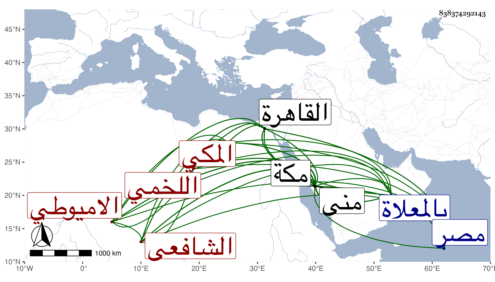

0902Sakhawi.DawLamic.ITO20230111-ara1.EIS1600.838374292143
Biography ID: 838374292143
438
عبد الرحيم بن إبراهيم بن محمد بن عبد الرحيم بن إبراهيم بن يحيى ابن أبي المجد أحمد الزين أبو علي بن الجمال أبي إسحق بن العز بن البهاء بن الجمال أبي إسحق اللخمي الاميوطي الأصل المكي الشافعي ويعرف بابن الأميوطي ولد في يوم الاثنين ثاني شعبان سنة ثمان وسبعين وسبعمائة بمكة ونشأ بها فحفظ القرآن وسمع الكثير على أبيه وكذا سمع على العفيف النشاوري والابناسي والشريف أبي عبد الله محمد بن قاسم وبعد ذلك على الزين المراغي كما أخبرني به ثم على ابن الجزري والشمس الشامي والزين الطبري والنور بن سلامة ، ودخل مصر بعد موت والده فسمع بالقاهرة في سنة أربع وتسعين بجامع الأزهر على المجد إسماعيل الحنفي وبعد ذلك من لفظ الزين العراقي بعض مجالس أماليه كما وجدته بخط المملي بحضرة الهيثمي بل كان يذكر لنا أنه لقي بالقاهرة البدر الزركشي وأخذ عنه وينكر قول القائل أنه كان قليل الكتب وأنه أخذ عن البلقيني وابن الملقن والكمال الدميري وليس ذلك كله ببعيد ولكنه لم يكثر من الطلب ، وكذا قال لي صاحبنا النجم بن فهد لا أعلم له اشتغالا ، وأجاز له في استدعاء مؤرخ بربيع الثاني سنة سبع وتسعين أحمد بن محمد بن الناصح وأحمد بن محمد المراغي الصوفي وأبو بكر ابن محمد بن أبي بكر السبتي وسعد النووي وأبو هريرة بن النقاش وعلي شاه بن فخر الدين بن علي الشعبافي وعمران بن إدريس الجلجولي ومحمد بن إبراهيم بن علي ابن إبراهيم الكردي ومحمد بن إسحق الابرقوهي ومحمد بن أبي بكر بن سليمان البكري ومحمد بن عبد الله بن الحسن البهنسي المهلبي ومحمد بن مبارك بن عثمان الحلبي والبدر ابن أبي البقاء السبكي ومحمد بن محمد بن محمد السخاوي في آخرين وفي استدعاء آخر ابن صديق وغيره ، وقدم القاهرة أيضا غير مرة ، منها في سنة اثنتين وخمسين فحدث فيها بأشياء سمع منه الأعيان وكذا حدث بمكة ولقيته في الموضعين فأكثرت عنه وسمعت عليه بمنى وغيرها ، وكان إنسانا ثقة خيرا عفيفا منجمعا عن الناس قانعا باليسير كثير التودد صبورا على الاسماع مقتدرا على شرعة النظم لكن الجيد فيه وسط الرتبة ، وهو من بيت علم وجلالة . مات بعد عصر يوم الثلاثاء سابع عشري شعبان سنة سبع وستين وصلى عليه بعد الصبح من الغد عند باب الكعبة ودفن بجانب أبيه بالقرب من قبر الفضيل ابن عياض بالمعلاة وهو خاتمة من يروي عن كثير من شيوخه بمكة رحمه الله وإيانا .
